Una vez entrenado el método contra-intuitivo, liberamos el contra y comenzamos ahora si a experiementar el método de la verdadera intuición.
"La inspiración es la capacidad de ver la función de las cosas. Es el milagro. La fisica cuántica ya confirmó que en el laboratorio se comprueba asi como se observa. Si observas tu intuición vas a confirmarla."
3 meses de grupo de estudios y laboratorio aplicado directamente a todas las áreas de tu vida, usando tus situaciones cotidianas para habitar y reconocer la intuición y estudiar en profundidad los fundamentos científicos y espirituales.
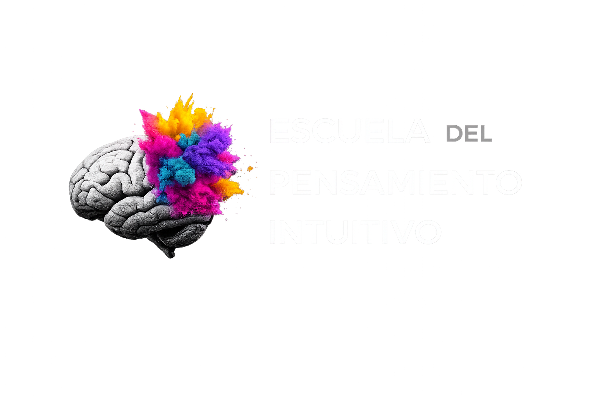
El Nivel 1 es la herramienta para salir de la lógica del EGO. Nos permitió vernos a nosotros mismos siendo creadores inconscientes. Nos ayudó a ver que la lucha era de igual a igual contra uno mismo y que el único enemigo es el mal uso de la mente dejandola a la deriva.
En el Nivel 1 usamos el método contra-intuitivo porque asumimos que el problema está en nuestra idea errada de la intuición. Por lo tanto, trabajamos para subir desde el nivel más bajo (verguenza), pasando por cada escalón hasta llegar al CORAJE. El punto en el que nos volvemos realmente libres de observar y de crear.
El Nivel 2 es el laboratorio del juego. Ahora el método se vuelve INTUITIVO porque conocemos la verdadera intuición y las trampas de la mente.
Ahora comienza el desafío de mantenerse en este estado y no volver a caer en el olvido. Para esto es clave el estudio, la enseñanza, las emociones bien liberadas y sobre todo una tribu de alta vibración.
Saliste del EGO y literalmente ahora comienza el verdadero JUEGO.
— La maestría de tu brújula interna y el estudio profundo de la consciencia. —
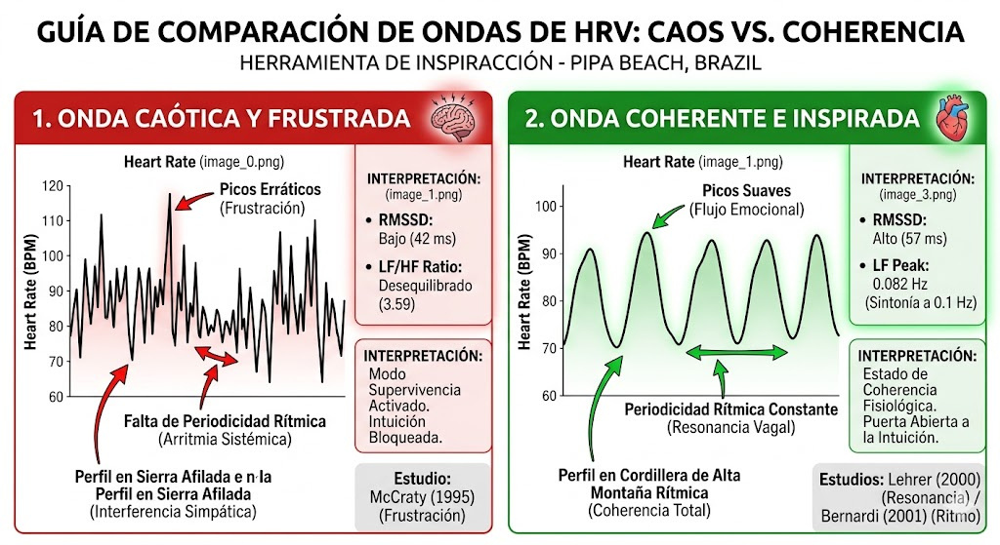
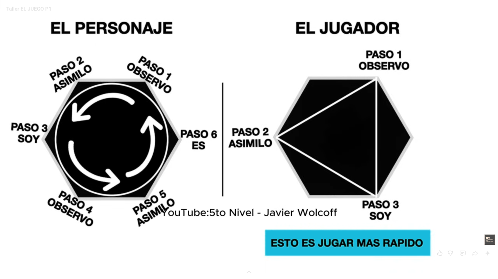
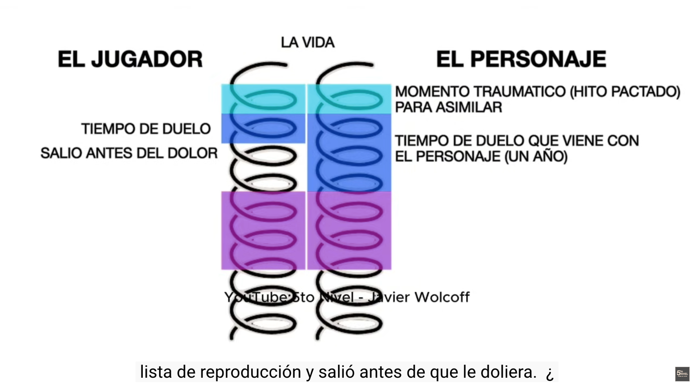
A partir de los reportes de practicantes certificados del Nivel 2 conocemos los siguientes resultados posibles del programa:
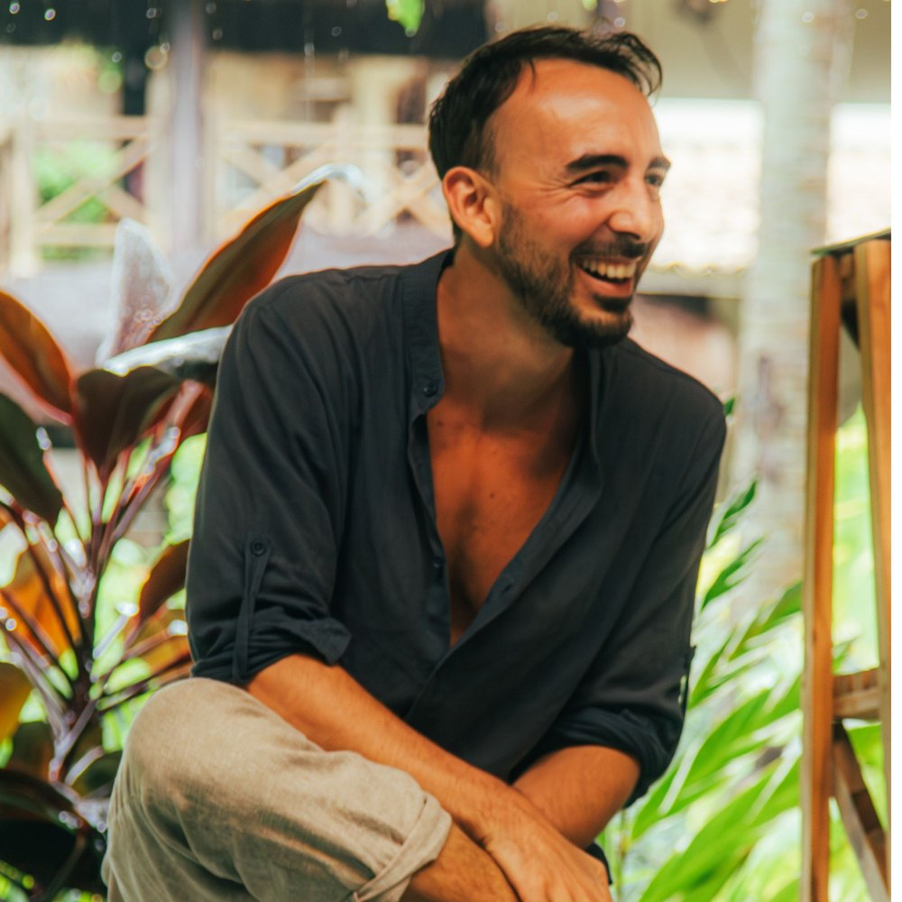
Creador del Método Contra-Intuitivo, fundador de la Escuela del Pensamiento Intuitivo y co-fundador de la escuela de movimiento Move Mentoring. Profesor en las formaciones de la escuela SomaYoga.
A mis 22 años mi realidad colapsó entre ataques de pánico, la quiebra del negocio familiar, deudas, y ningun patrimonio a favor en la familia. En ese caos fue que experimenté, de forma espontánea, un estado expandido de conciencia que se sostuvo casi un año. No fue un bienestar pasajero, sino una vivencia trascendental de unidad absoluta que disolvió toda separación a la que describí como "éxtasis". Me sentia realizado, completo y enamorado de absolutamente todo. Sentir esa plenitud en pleno caos me dejó nuevas preguntas: ¿Esto significa que siempre tuve la posibilidad de sentirme asi y no la veia? ¿Qué cambia internamente para que el afuera deje de condicionarnos?
Pasé los siguientes cinco años obsesionado con hallar una respuesta científica. Me sumergí en la neurociencia y la fisiología de la salud, pero caí en la neurosis de acumular comportamientos, hábitos, dietas y terapias logrando unicamente aumentar la obsesión, la frustración y la ansiedad.
¿Como salí del este loop? Comenzando por el final. Un ejemplo fue el día en que decidí renunciar a mi creencia de que estaba enfermo. Ese día me liberé del peso de cientos de hábitos, condiciones especiales y miedos que me tenían atado. Paradójicamente me entere que nunca estuve enfermo y entonces los síntomas desaparecieron. Las ilusiones del ego pueden ser muy convincentes, es contra-intuitivo.
Otro ejemplo es cuando decidí resolver mi situación económica. Fue una odisea emocional el admitir que esto era importante para mi y que no necesitaba justificarlo. Llegué a tener ataques de pánico cuando por fin empezaron a ingresarme grandes cantidades de dinero y entonces pude ver con claridad todos los programas inconscientes a los que ni siquiera sabia que me enfrentaba.
En ambos casos, la transformación fue muy rápida y no tuve que hacer nada mas que dejar morir al personaje. Estar dispuesto a perder aquello que más creia que anhelaba. Entonces, por pirmera vez entendí lo que significa el amor incondicional y el inmenso poder que conlleva.
De pronto todo comenzó a llegar a mi a una velocidad inimaginada; dinero, viajes, vínculos, mi cuerpo mejoró, la piel de mi cara cambió, mi autoestima aumentó, mi reconocimiento y mis proyectos crecieron a medida que se volvían mas auténticos. Y entonces me encontré con dinero, tiempo y energía para empezar a ayudar a otras personas.
Para dar rigor a este proceso, estudié Neurociencias con Nazareth Castellanos, Bioneuroemoción con Enric Corbera, y así nació el programa InspirAcción. Tambien trabaje bajo la guia de mentores de negocios con visión espiritual como Lain Garcia Calvo, Sofia Contreras y Mariano Rodriguez, quienes me inspiraron a crear Proyección, una mentoria donde guio a las personas que aprendan a usar sus proyectos personales como un mapa para la evolución interna y la abundancia.
Mi propósito es guiar a las personas a desprogramar sus mecanismos limitantes para expresar su autenticidad y crear su vida sin miedos, culpas ni juicios. El camino es contra-intuitivo: cuando liberás la presión sobre tus metas, ellas solas te vienen a buscar.
El programa consta de 6 módulos quincenales. Cada 15 días se desbloquea un nuevo módulo de prácticas y de estudio.
Que organiza los conceptos de forma práctica, sencilla y aplicable en la vida cotidiana.
Además: en el grupo de WhatsApp contás con soporte y asistencia de egresados de la escuela que pasaron por el Nivel 1 y 2 y se certificaron en la formación presencial. Durante los 15 días de duración del módulo tenés la libertad de organizarte con tus tiempos a tu manera utilizando los recursos que más te identifiquen.
CERTIFICACIÓN
Se otorga al completar el proceso. Es requisito para realizar el Nivel 2 y/o la Formación.
Cada uno de los siguientes temas establece las bases sobre las que fueron creados los entrenamientos de InspirAcción: Neurociencia, Psicología, Fisiología, Metafísica, Física Cuántica y Espiritualidad.
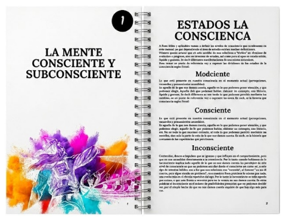
MÓDULO 01
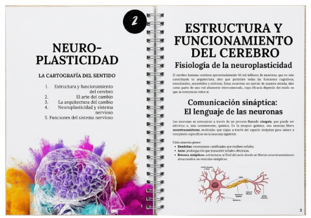
MÓDULO 02
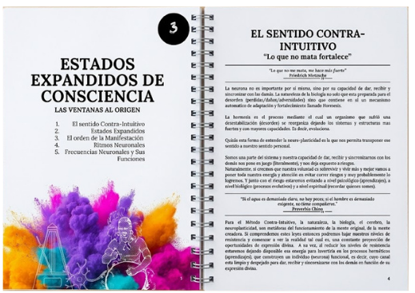
MÓDULO 03
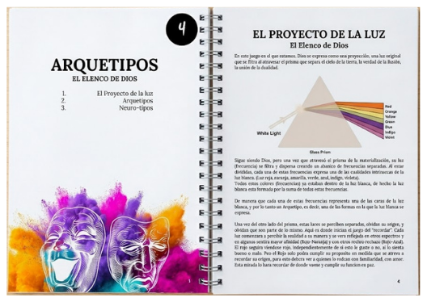
MÓDULO 04
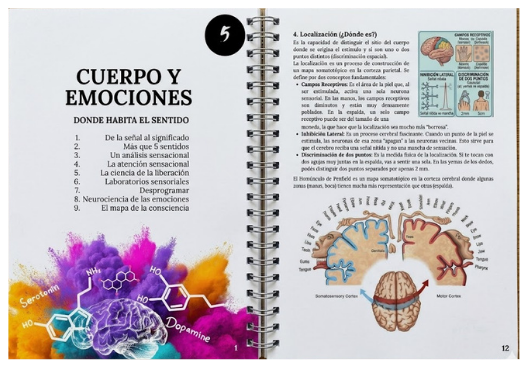
MÓDULO 05
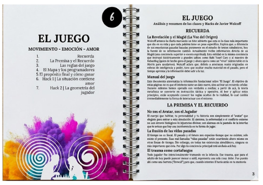
MÓDULO 06
Por inscribirte a la 3ª generación del Nivel 2 de InspirAcción.
Agenda tu sesion con Agus con un 40% de descuento durante toda la cursada del programa
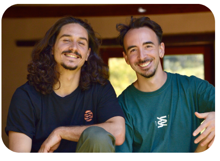
Regulacion fisiologica del estres mediante tecnicas de respiración y las practicas regenerativas
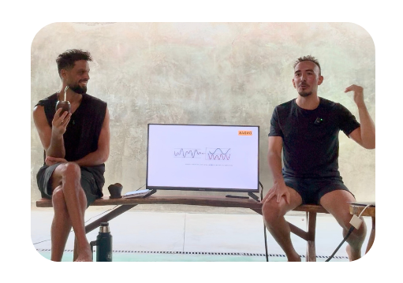
Practicas de meta-cognición y regulación de la coherencia cardiaca desde el Yoga
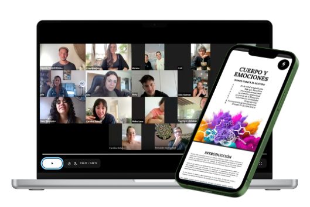
Se entregan las metricas del progreso grupal realizadas en las 3 instancias claves de la cursada.
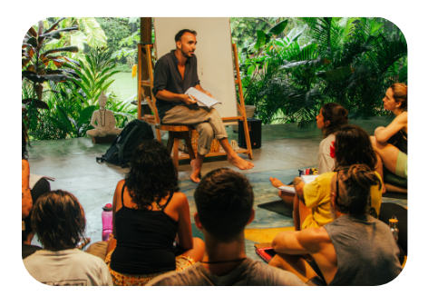
Vas a poder acceder tanto en vivo como en diferido a todas las sesiones del Nivel 1 ya que su cursada es en simultáneo con la del Nivel 2.
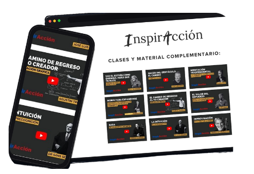
Clases especiales de otras formaciones y grupos anteriores
Les preguntamos: "Para realizar este entrenamiento muchos de ustedes invirtieron la energía que apenas tenían, el tiempo que les faltaba y el dinero de sus ahorros o que pidieron prestado. Si es tu caso, siendo completamente honesto/a con vos: ¿considerás que lo valió? ¿Qué le dirías a alguien que está en la misma situación en la que estabas antes de tomar la decisión?"
Y también: "Si tuvieras que explicar qué hace a InspirAcción diferente a otras propuestas, ¿Qué dirías?"
"Siento que lo valió completamente, todavía en el proceso del modulo 6 jejej. pero lo vale y lo valió y continua, porque es algo de toda la vida, y no de unos meses nada más. Es un aprendizaje, para volver a revisarlo y practicarlo, y entrenarlo y volverlo a ver y volver a entrenar. Le diría a esa persona que vaya para adelante, que confié en su fuego interno y que si la intuición lo pide, que la escuche y vaya. (Lo escribo y me río porque lo que le digo a esa persona me lo estoy diciendo a mi, muchas veces no lo aplico, pero cuando lo aplico, es por ahí)"
Alejandro Figueras
"Si lo super valió, lo dudé, pero en cuanto comenzo supe que estaba en el camino correcto y estoy muy feliz con todo el conocimiento aprendido y sobre todo la energia del grupo y todo lo leido! Sobre todo lo valió por que fue muy desafiante y siento que lo pasé por el cuerpo y ahora tengo otra creencia sobre quien soy y lo que puedo hacer y como ver situaciones y conflictos."
Mariano Tombeur
"Sí, lo valió. Y creo recién comienza..."
Le diría que hay decisiones en la vida que dependen de esa voluntad y de esa escucha interna que no vale a quedarnos en cada apoyo en la almohada, en cada momento en el indoloro, en cada minuto al azar.
Y que si esa voluntad y escucha están en duda o sufrimiento, necesitan sólo una decisión, sólo una, sólo un momento de inconsciencia para entrenar y transformar este Ser que nos acompaña con quien tenemos la inevitable conveniencia de cerrar la relación más honesta del mundo: experimentá InspirAcción."
"Lo valió muchisimo. Le diría que no tenga miedo, que no se va a arrepentir, que lo vea como una inversión en sí mismo, que no hay forma que nada cambie luego de esto. Y que confíe en que se dieron las condiciones perfectas para que llegue a este contenido, que se entregue al juego de lo que es, y se prepare para despertar porque esto es picantiiiisimooo"
Wanda Griffero
"El contenido es el diferencial y la forma en la que Agus lo explica."
Aldana López
"El temario y los conceptos están muy por fuera de lo común, la propuesta te sumerge en un hábitar distinto con uno mismo"
David Nehuén Dos Santos Bauer
"La coherencia de todo el proceso. El contenido teórico es excelente, los ejercicios con propósitos definidos, las clases presenciales donde abordamos ejemplos prácticos, y aplicables en las vidas de cada uno. Como todo se va intentando y va contando de mucho sentido."
Natalia estela cecere
"Que es un entrenamiento de la mente - parece terapia (y en cierto punto lo es!) pero es una práctica para re programar , re conocer, re aprender, consciente mente Se aprende de cómo funciona el cerebro, la mente , el SNC, etc para luego desarticular o re articularlo para nuestro beneficio. No es fácil, y por momentos incómodo pero por ahí es."
Patricia Ligia
"Hacerse responsable de uno mismo tambien tiene que ver con explorar los lugares mas ocultos que a veces ni sabemos que los tenemos pero el grupo y la comunidad acompaña de forma amorosa y que cada uno va a su tiempo, no hay prisa."
Camila Mansilla Maturana
"Depende desde donde nace esta decisión y tu capacidad de inpirarte, poner foco, voluntad, hacer el trabajo y porque no abandonarlo para sentir. Creo que el único requisito es saber que algo más grande que una situación te motiva, que tienes curiosidad, algo te impulsa y deseas saber lo que está dentro de ti."
Maitena Asunción Pérez Echave
"Primero y más importante que es una inversión para tu salud mental , partiendo de esa base , invertir en uno mismo es lo más auténtico y placentero que harás. Le diría que se anime a preguntarse cosas, le diría que se atreva a un despertar diferente, a entrenar la cabeza para que pueda mejorar día a día y no preocuparse porque cosas que solo ocupan lugar con el ego de amigo y no resuelven nada de tu aquí y ahora."
Mariano sacheri
"Considero que lo valió y más. Me agradezco por haber dicho sí en ese momento en el que mi cuenta bancaria no daba fé de que podamos pagarlo! Me agradezco haber saltado porque lo que siento que me llevo es realmente invaluable. Le diría que en este mundo, dónde casi todo invita a mirar afuera, este programa donde encontras herramientas súper amorosas y prácticas para conocerte más, mejor, hacerte cargo de tu vida y sobre todo sufrir menos es para todo aquel que quiera cambios reales en su existencia! Que no hay forma de arrepentirse."
Yamila Melano
"En cuanto al material y la propuesta en si, lo veo diferente en la variedad de info y material teórico, incluyendo los materiales complementarios y citas. Es bastante enriquecedor, poder tener otras referencias para continuar buceando en este mar de info hermoso. También lo veo diferente a otras propuestas, desde ya por la visión de Agus y la guía de él. Creo que, el no estar como un referente onda 'Maestro o Gurú', o por lo menos percibiéndolo así, hace que sea más genuina la propuesta."
Alejandro Figueras
"Cambio mi forma de ver la realidad, por ende de accionar y de vivir."
Bernarda parra
"Inspiracción a diferencia de otros programas, te da herramientas REALES Y PRÁCTICAS para aplicar HOY en tu vida. No te pide nada que no tengas, no subestima, al contrario, te obliga amorosamente a ponerte en el lugar de creador que te corresponde como ser humano."
Yamila Melano
"Como dijo Agus , te entrena , esto fue un entrenamiento intensivo de cómo entender cómo funciona la cabeza , la mente , las máscaras del ego. El formato que tiene este programa lo hace diferente a otras propuestas. Depende mucho del enfoque del orador y la consecuencia que le busque el receptor"
Mariano sacheri
"Que no lo piense, es un antes y después la manera de ver y sentir la vida"
Daniela Weffer
"Vengo gastando mucha plata en formaciones pero esta es la más significativa. La que me dio las herramientas y me ayudo a ver que no soy el único loco que cree en todo esto. Ya que desde chico vengo pasando por varias filosofías a través del entrenamiento y los deportes de combate. Ahora todo se simplifica y me da poder de crado. En si entendi todo. Ahora es cuestión de seguir aplicando y disfrutando que era la parte que no estaba haciendo. Graciass!!!"
Leandro exequiel calleros
"Siii valió 100% la pena aunque aún no termino pero sé que eso tiene que ver conmigo pero ah valido la pena cada peso y segundo. Le diría que vale mucho la pena es una experiencia que LITERALMENTE te cambia la vida. De hoy para siempre"
Melissa Natalia palacios
"Si. Para mi fue un entrenamiento 100% recomendable. Me quedo con un montón de herramientas que incluso hoy llevo a mis prácticas, a mis alumn@s. Feliz de haber llegado a vos Agus y feliz de poder estar en Pipa en dos semanas. Solo agradecimiento por todo lo que enseñas, por tu forma de transmitir, por tu mirada."
Zaira Selene Delsordo Núñez
"Estructura los diversos y múltiples accesos de información (filosofías, prácticas, estudios, etc) de una manera inteligente, ordenada y eficiente para aplicarlos en conjunto, tanto en el estudio y práctica mental/cognitiva/ inteligible como en la práctica somática y cuántica."
Enrique Ezequiel Molina
"Que te permite observar y aprender a gestionar la mente el cuerpo la percepción y la modulación del tiempo, una herramienta de conocimiento muy profundo, desafiante y posible"
Camila fernanda mansilla maturana
"Combina todo lo que en otros lugares solo es info aislada y eso genera confusión y más ruido mental, el tener todo en un solo lugar ayuda darle mucho más sentido a todo y darnos cuenta que eso que pareciera ser 'diferente' no es nada más que lo mismo dicho de otra forma"
Melissa Natalia palacios
No es un requisito pero por la experiencia es recomendable, ya que abordamos cuestiones prácticas de la vida cotidiana y se mantiene un nivel profesional y cálido a la vez.
Las sesiones en vivo quedan grabadas y se entregan dentro de las 48hs posteriores. Cualquier consulta o intervención la podés dejar en el grupo de WhatsApp, que funciona como extensión de las sesiones en vivo.
El programa viene demostrando una igualdad de efectividad en todos los casos. Al trabajar con casos de la vida cotidiana es difícil determinar cuánto tiempo lleva el programa, ya que vas a aprender a usar todas las áreas de tu vida como entrenamiento.
Si hablamos en términos de lectura, escritura, prácticas complementarias y sesiones, calculamos un mínimo de entre 2 y 6 horas semanales. (Pensalo como un gimnasio, porque funciona exactamente igual.)
Para obtener la certificación deberás completar el programa y dos formularios de evaluación que van a medir tus niveles de evolución en áreas de tu vida, dejando evidencia de los cambios relativos (emocional y mental) y objetivos (sucesos, salud, finanzas, acciones, hábitos, vínculos, etc.).
Al ser un programa de entrenamiento el único requisito es entrenar y ver los resultados suceder. La evidencia definitiva es tu vida.
Por resonancia. Por lo general la mayoría de las personas que ingresan al programa ya escucharon todos los podcast o vieron las clases de YouTube, por lo tanto ingresan por intuición. Si estás buscando un curso más, no es este tu lugar. Esto no es para saber más de un tema, es para ser el cambio.
Pensalo como una combinación entre un programa de educación en libertad emocional (el que no tuvimos en la escuela) y una sesión de 3 meses de entrenamiento en neuro-psico-espiritualidad grupal guiada por un entrenador. El nivel de impacto es total.
Para responder esto prefiero dejarlos con los testimonios de las personas que ya pasaron por el programa.
Plazas limitadas. 3 meses de grupo de estudios y laboratorio para habitar y reconocer la intuición, aplicado a todas las áreas de tu vida.
Quiero hablar con Agustín